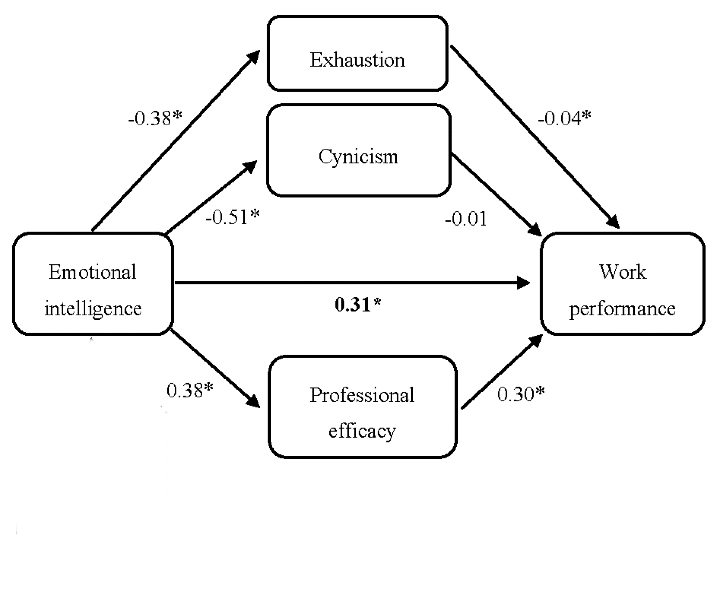

Beyond IQ: The EQ imperative for cultivating a culture of Achievement
Posted on August 1, 2023

Siddhartha Raj
Data scientist (Chistats Labs pvt Ltd)
In today's fast-paced and competitive world, success is often viewed as the result of sheer intellect and cognitive abilities. However, there's a hidden factor that can unlock even greater achievements: Emotional Intelligence (EQ). It goes beyond raw intelligence, providing the missing piece of the puzzle that transforms good performance into outstanding accomplishments.By developing and cultivating EQ skills, individuals can better understand themselves, relate to others, and navigate the intricate dynamics of the modern world.
What is EQ?
Emotional intelligence (EQ) refers to the ability to recognize, understand, and manage one's own emotions, as well as the emotions of others. It involves being aware of one's feelings, empathizing with others, and effectively regulating emotions to navigate social interactions and make informed decisions.
The scientific support.
One such study conducted by Gallup found that employees whose managers possess high emotional intelligence exhibit a 59% higher level of engagement compared to those with managers lacking in this area. Employee engagement is a crucial factor in organizational success. Engaged employees are more committed, motivated, and invested in their work, resulting in higher productivity levels and better overall performance. When managers demonstrate emotional intelligence, they are better equipped to understand and connect with their employees on an emotional level, fostering a sense of trust, support, and psychological safety. This, in turn, leads to increased employee engagement.
Another study published in the international journal of environmental research and public health, shows professionals with high EQ have adequate resources to deal with work demands, reducing weariness. Furthermore, emotional intelligence (EI) adds to improved professional efficacy, which aids in the perception of continuous effectiveness at work and promotes better work performance. Figure 1, shows a direct correlation between EQ and work performance as well as a negative correlation between exhaustion and cynicism.

Figure 1. The relationship between emotional intelligence and work performance, * p < 0.01.
Case study: EQ in action
Let's explore a case story that exemplifies the profound influence of EQ in managerial interactions and its subsequent impact on employee engagement and professional efficacy.
When an employee approaches a manager to present their work, Let's say, Manager A, responds by saying “I appreciate your effort, but there is still room for improvement” and highlighting areas for improvement, like needing some more detailing and or so. Although it is a concise and constructive response, it lacks actionable suggestions. The employee will be void of self-doubt that how could I have done better. Employees will keep overthinking the suggestion as it is obvious because of less experience. This will increase stress, and nervousness and lower the professional efficacy. Before proceeding, it's important to note that the intention here is not to label one manager as "bad" or ineffective. Both managers may possess valuable skills and experience in their respective roles. However, the focus is on highlighting the significant impact of emotional intelligence in delivering feedback and improving professional efficacy.
Manager B, respond by saying “I appreciate the dedication you put into this project. Let's discuss some areas where we can refine your approach to achieve even better results. You could have added some more technical details around the results we got with visual representations to make it more catchy”. In contrast to Manager A's response, this response includes appreciation as well as direct actionable suggestions.
How does the two response show the level of EQ?
What the Manager B doing differently? Subconsciously, He is putting himself in the employee’s position who has less experience and seeking clear actionable that will improve his skills as well as reduce the time required for the improvement. This will do two things one reduce the stress and self-doubt of an employee resulting in improved employee engagement with the work and second, significantly reduce the overthinking and hunting for answers how?, resulting in improved professional efficacy. One of the traits of EQ, empathizing with employee needs shown by Manger B which was lacking in Manager A, significantly improved the performance. This, in turn, leads to higher job satisfaction, lower turnover rates, and increased productivity within teams.
Conclusion
EQ plays a vital role in managerial interactions, particularly when providing feedback to employees. By demonstrating emotional intelligence through appreciative yet actionable responses, managers can empower their employees, reduce stress and self-doubt, and enhance professional efficacy. Cultivating emotional intelligence among managers benefits both individuals and organizations, creating a positive and productive work environment that is well supported by scientific research.
References
[1] MDPI and ACS Style
Sanchez-Gomez, M.; Breso, E. In Pursuit of Work Performance: Testing the Contribution of Emotional Intelligence and Burnout. Int. J. Environ. Res. Public Health 2020, 17, 5373. https://doi.org/10.3390/ijerph17155373
[2] Goleman, D. (2012, January 11). Emotional Intelligence. Bantam.
Comment Section!